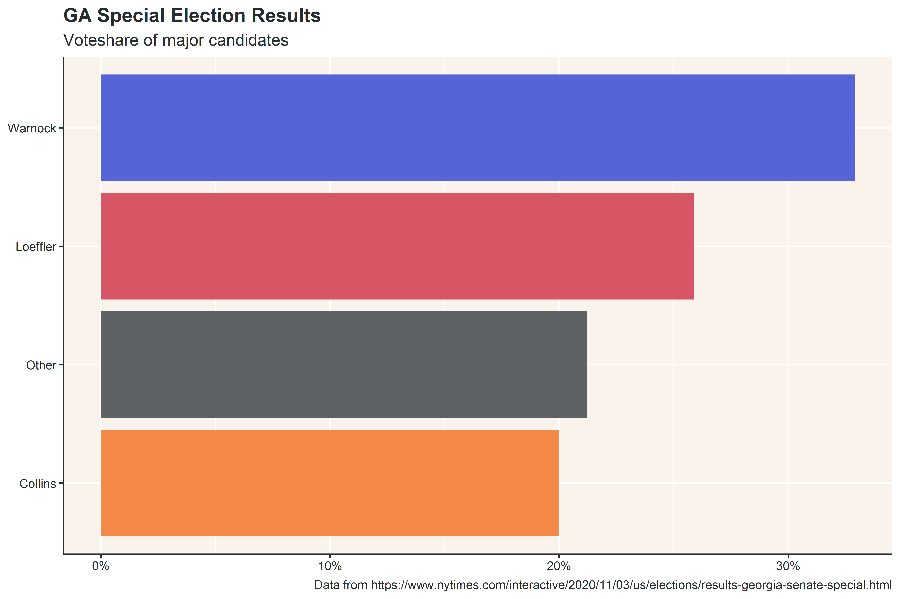
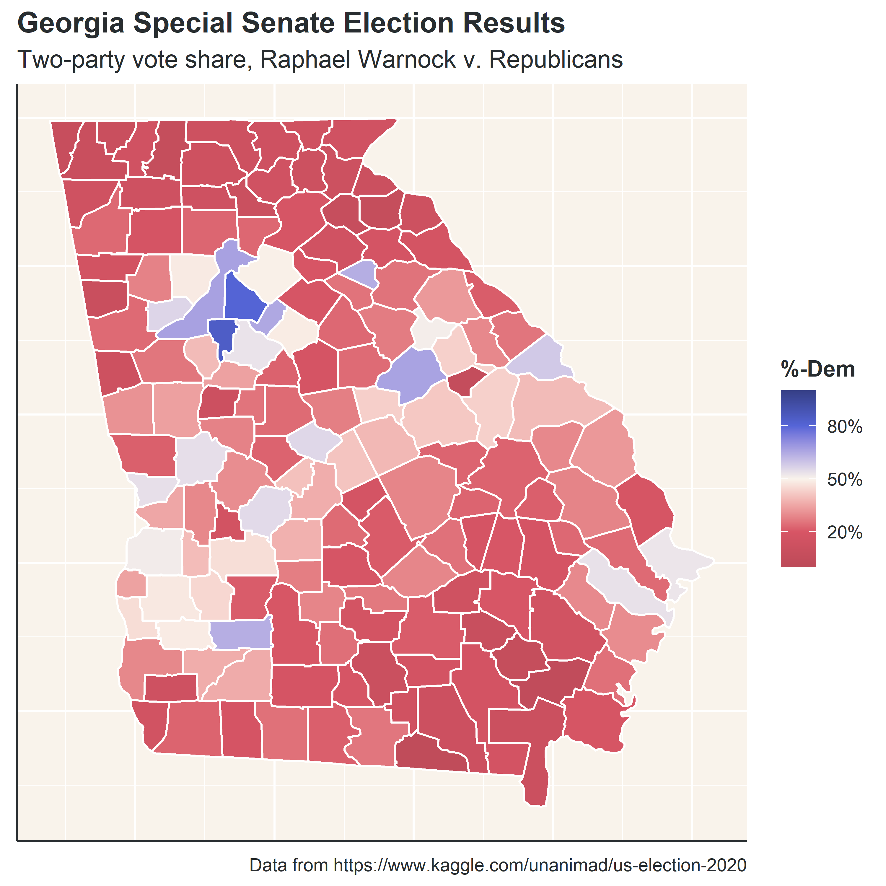
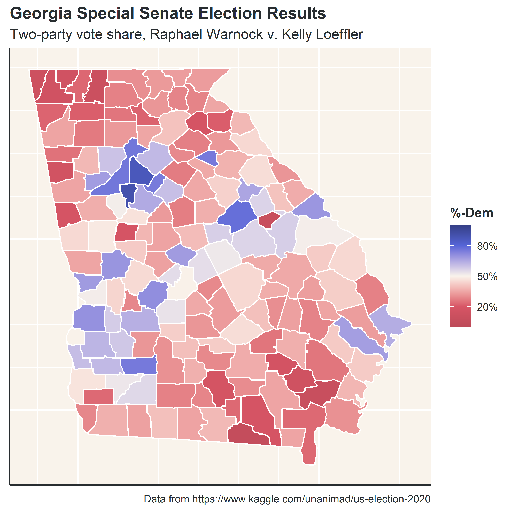
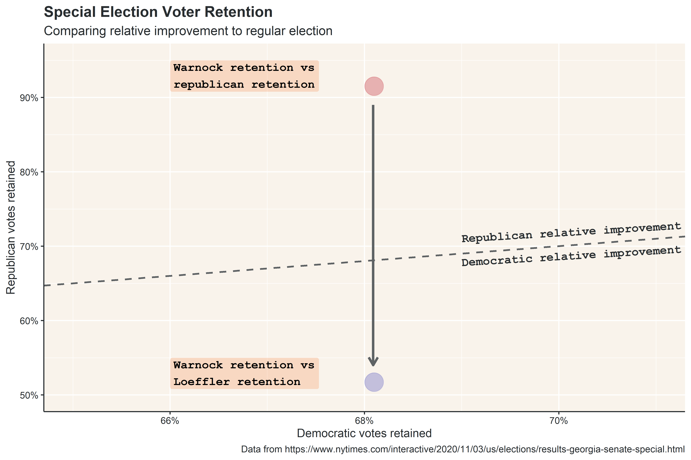
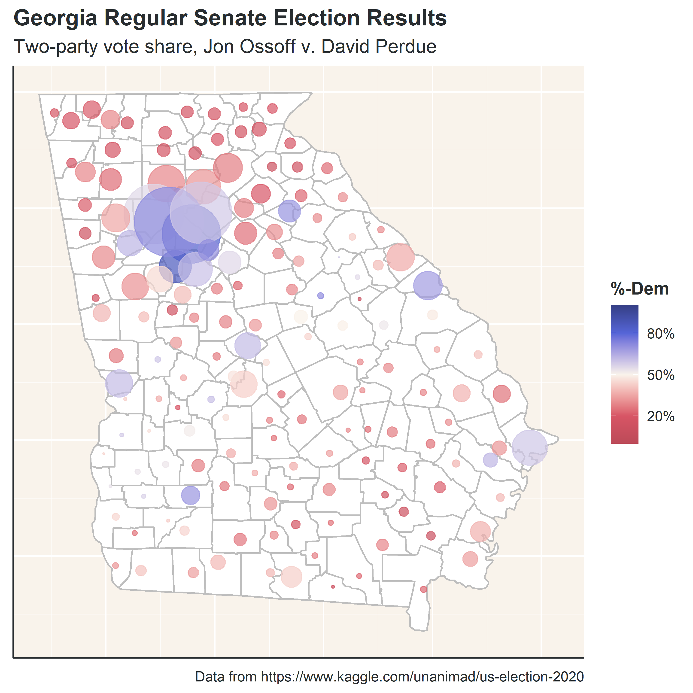
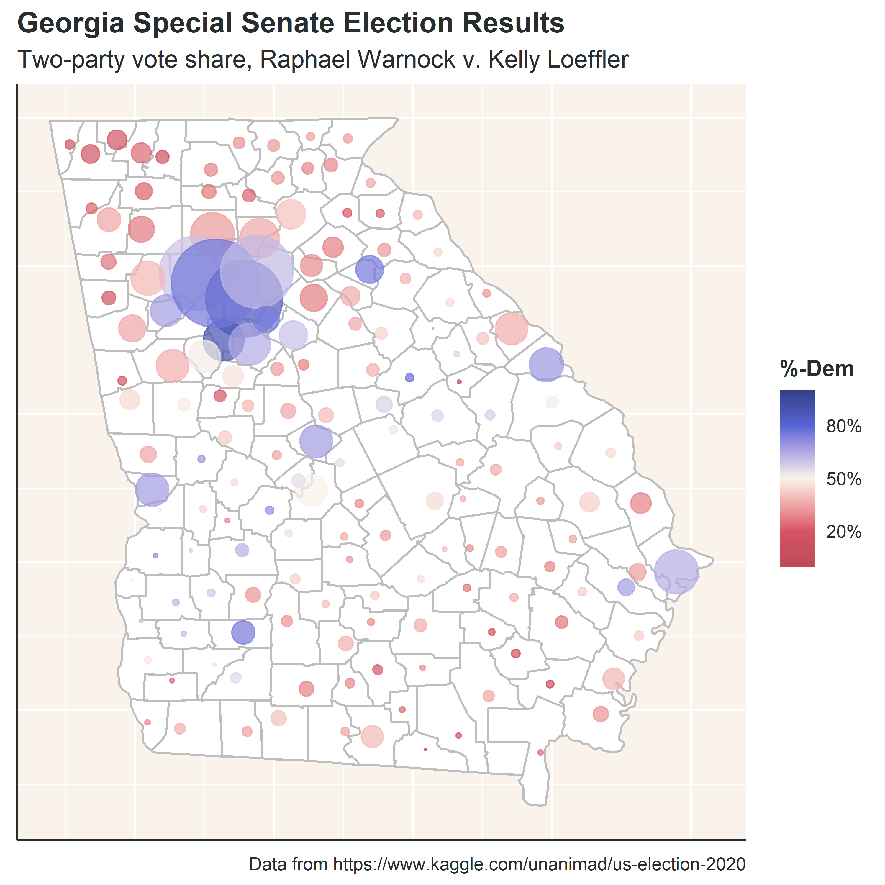

I’ll be honest - prior to writing this post, I had never heard of Doug Collins (R), the third major candidate in the race for Georgia’s special senate election after Raphael Warnock (D) and Kelly Loeffler (R). I wasn’t particularly tuned in to the Georgia senate elections prior to the runoff (by which time, the special election race had narrowed to just Warnock and Loeffler) and most of the coverage I had seen prior to Nov. 3rd pitted Warnock against Leoffler, without considering Collins. Even Google search trends show that people were more interested in Loeffler than Collins leading up to the election.
Despite my ignorance, Collins was a major candidate in the special election, and ended up with a significant portion of the republican vote. It may be a bit obvious, but republicans splitting votes between Loeffler and Collins made Warnock a significantly more competitive candidate. However, the role of voter dropoff relative to the regular senate election is worth exploring in detail.

Georgia’s regular senate election was a much more typical election than the special election - a tightly contested election between two candidates, Jon Ossoff (D) and David Perdue (R). The county result map comparing the voteshare of the two major candidates shows democratic strongholds in urban areas and a republican lean in rural areas. The county result map of the special election, if comparing Warnock to both Loeffler and Collins, is noticeably redder.

If we remove Collins, however, and just look at the county map comparing the top two candidates, the map shifts drastically in Warnock’s favor.

At face value, this explains how Warnock was able to advance to the runoff - split ticket votes aren’t usually good for the party with multiple major candidates. Voter dropoff between the regular and special election, however, shows just how much this pushed Warnock over the edge.
About 5 million Georgians voted in each of the senate elections in November. In the regular election, the major candidates, Ossoff and Perdue, accounted for about 98% of the votes, the rest going to Libertarian Shane Hazel or other write-in candidates. In the special election, on the other hand, a huge portion of Georgia voters didn’t vote for the major candidates - Warnock, Loeffler, and Collins only account for 79% of the votes! That’s about a 1 million voters who didn’t vote for their party’s major candidate (i.e., “dropped-off”).
To get a clear grasp of what voter retention means in this context, let’s consider a hypothetical county with 100 voters, of which 60 voted for Perdue and 40 voted for Ossoff in the regular election. Let’s also say these 100 voters split their special election votes in the following way: 35 votes for Loeffler, 15 votes for Collins, 30 votes for Warnock, and 20 write-in votes. In this scenario, Warnock retained 75% of regular election votes (30 / 40 = 75%), republicans, collectively, retained 83% ([35 + 15] / 60 = 83%), and Loeffler retained 58% (35 / 60 = 58%). In this hypothetical county, republicans collectively improved relative to the regular election, since they had a greater vote retention, but Loeffler on her own worsened, despite winning more votes than Warnock.
If we compare retentions for the entire state of Georgia, we can see that Loeffler and Collins were collectively better at retaining regular election votes than Warnock, retaining about 90% of Perdue votes compared to Warnock’s retention of about 68% of Ossoff votes. On her own, however, Loeffler was worse at retaining votes than Warnock, retaining a little over 50% of Perdue votes. This means that Warnock improved democratic performance relative to the regular election when compared against Loeffler directly.

Repeating this comparison across every county in Georgia shows that Loeffler and Collins, collectively, improved republican performance relative to the regular senate election across every single county. When, however, Collins is omitted, and Warnock and Loeffler are compared directly, democratic performance improves across the majority of counties.

While it was obvious from the beginning that the split ticket hurt republicans in Georgia’s special senate election, it’s interesting to see just how much this split ticket helped Warnock. Collectively, republicans handily won the special election, but splitting votes between Loeffler and Collins meant that Warnock ended up winning a plurality of the votes.
Political analysists are probably better than me at examining why multiple republicans ran as major contenders for the special senate election, but a quick take is that Kelly Loeffler wasn’t a particularly strong candidate. Although she was an incumbent, she wasn’t a senator any Georgian had ever voted for - she gained her senate seat through appointment. Loeffler came to office as a moderate, but quickly pivoted to a more Trumpy ideology, eventually defining herself as “more conservative than Atilla the Hun” in a campaign ad (I would normally just add a hyperlink, but this ad is just too weird not to link directly - I originally thought this was a bad parody).
{{% youtube "4pfvEFPvVGA" %}}
Her campaign was also plagued by a few scandals, like darkening Warnock’s skin in a campaign ad, taking photos with known KKK members, and potentially making stock trades based on COVID-19 information not-yet released to the public. It’s a bit of a conjecture, so take this with a grain of salt, but all of the above factors may have provided Collins an opportunity to run as a stronger & less divisive alternative to Loeffler.
Choropleth charts (maps) can be misleading in the wrong context - it’s easy to subconsciously associate area with population. It wasn’t particularly relevant to the post above, but in spirit of the animation “Land doesn’t vote, people do”, I added dot-plot maps where bubble size corresponds to total number of votes.


As always, source data and code can be found on github. I’m particularly happy with how this post turned out. I learned a lot of new things worth highlighting (some of this gets into technical mumbo jumbo):
For this post, I had originally wanted to compare presidential vote to senate, governor, and house vote, but I had to pivot a bit to just the Georgia senate elections, for a few reasons. Firstly, the senate county dataset from Kaggle, for whatever reason, doesn’t include the winner of each county. Adding this by hand, just for Georgia’s 159 counties and two senate elections took hours. There’s probably a more efficient way to do this by scraping the data from online, but then I’d have to have learned a scraping package in addition to all of the other packages. I may have to hold on the original post idea for a bit while I pick up these skills.
That being said, I’ve already started working on next week’s post. It’s a bit of a departure from what I’ve been doing, so I’m excited to see how it’ll turn out.
{kind=link}